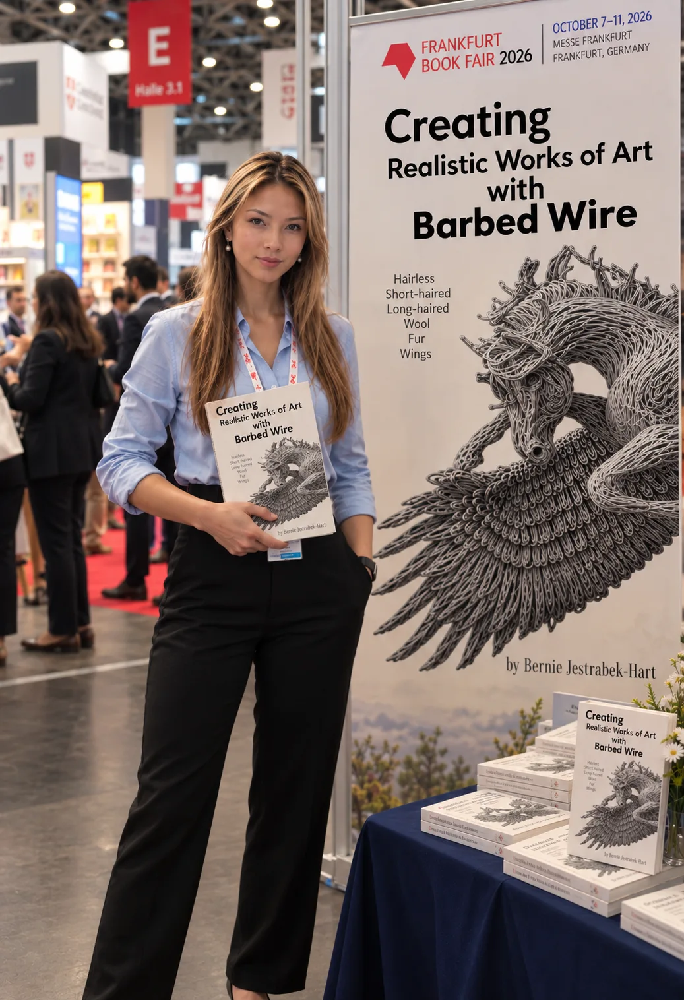

Independent literary & film representation
A story worth
telling.
A world worth
reaching.
For distinctive voices. For stories that stay with us.
Thoughtful representation, from the first page
to what comes next.
01 / A shared belief
The right story can change
the way we see everything.
Behind every manuscript is a person with something to say. A memory. An imagined world. A perspective we haven’t encountered before.
I help authors see the possibilities in their work—and find a considered path toward the readers and audiences it could reach.
Meet Ivy02 / The work
From page
to possibility.
A personal approach to the business of storytelling.
One author. One vision. A thoughtful next step.
Literary representation
Distinctive voices. Thoughtful positioning.
02Publishing guidance
A considered path to publication.
03Film & television rights
New possibilities beyond the page.

03 / Beyond borders
Good stories
have no borders.
A wider conversation begins when stories travel. Discover the international publishing perspective behind Ivy’s work.
From the journal